Background & History
ARPAnet
• In 1960s, U.S. Department of Defense's Advanced Research Projects Agency began funding the ARPAnet, an experimental wide area computer network, and it is only for U.S. government use.
TCP/IP and Internet
• In 1980s, TCP/IP protocol was developed and soon became the standard host-networking protocol on ARPAnet. Then in the University of California at Berkeley's BSD Unix OS, they includes the TCP/TP suite ad it's free to universities. Because it's cheap enough, so many many computers started to connect to the ARPAnet which is becoming the well-known Internet.
NSFNET
• In 1988s, ARPAnet was retired. NSFNET took its place. NSFNET is funded by the National Science Foundation.
Commercialize
• In 1995, Internet made a transition from using the NSFNET as a backbone to using mutiple commercial backbones, run by telecommunications companies.
DNS history
• In 1970s, the ARPAnet has only hunderds of hosts. A single HOSTS.TXT file, contained a name-to-address mapping for every host connected in ARPAnet. This file is familiar with Unix host table /etc/hosts.
• The HOSTS.TXT was maintained by SRI's Network Information Center and distributed from a single host. The HOSTS file was updated once or twice a week. At that time, there is no guarantee to have uniqueness hostnames.
• When ARPAnet moved to TCP/IP, the population of the network exploded. And it becomes harder and harder to maintain the HOSTS.TXT.
• The government starts to look for a successor for HOSTS.TXT. They want to create a system that solved the problems inherent in a unified host-table system. The new system should allow local administration of data yet make that data globally available.
• In 1984s, Paul Mockapetris released RFCs 882 and 883, which described the Domain Name System.
Back To MenuWhat is DNS?
Domain Name System is a distributed database.
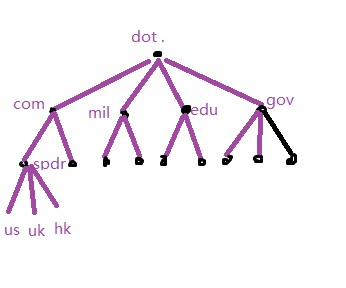The depth of the tree is limited to 127 levels. Each node can be up to 63 characters long.
FQDN
Fully Qualified Domain Name. It is the absolute domain name which is relative to the root and unambiguously specifies a node's location in the hierarchy.
Domain Namespace
DNS's distributed database is indexed by domain names. Each domain name is essentially just a path in a large inverted tree, called the domain namespace. i.e. ".com"
Domain
A domain is simply a subtree of the domain namespace. i.e. "spdrs.com"
SubDomain
A domain may have several subtrees of its own, called subdomains. i.e. "us.spdrs.com","uk.spdrs.com"
The root
The DOT "." is the root of the DNS tree, the very top domain for every host, i.e. www.spdrs.com. (There is a dot in the end and browsers will add it for you.)
Nameservers
The programs that store information about the domain namespace are called nameservers.
Root Nameservers
There is only 13 root domain server systems in the world.
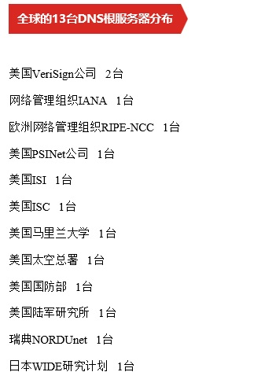Why the number 13?
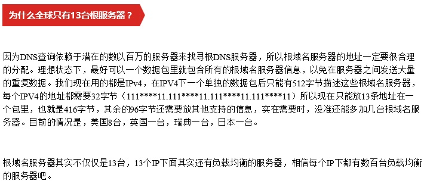Zone
A zone contains the domain names and data in any subdomains that aren't delegated away. i.e. "spdrs.com" is a zone including all its subdomains but not including "spdrmobile.spdrs.com".
Resolvers
Resolvers are the clients that access nameservers. The resolver handles,
• Query a nameserver
• Interpreting responses.
• Returning info to the programs requested it.
Back To Menu
DNS query methods
Recursion
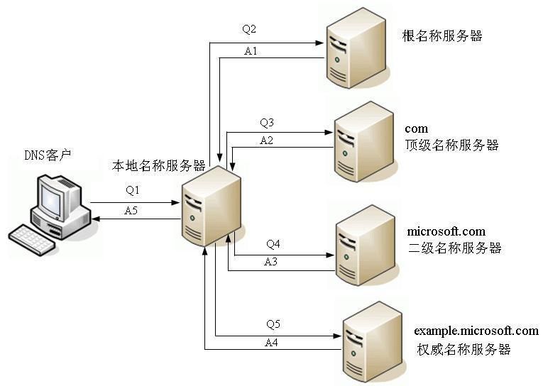Iteration
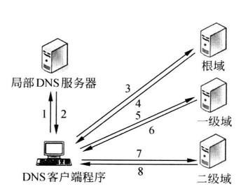DNS resolution process
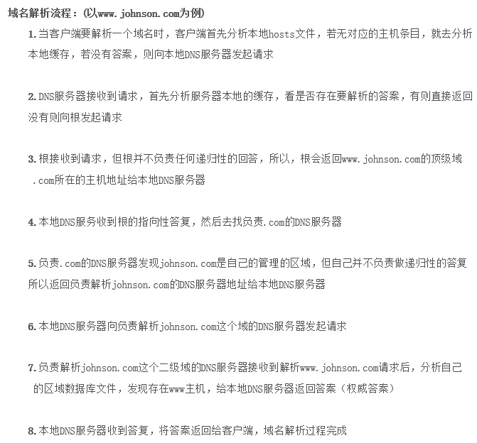DNS local cache
For Windows: C:\Windows\System32\drivers\etc\hosts
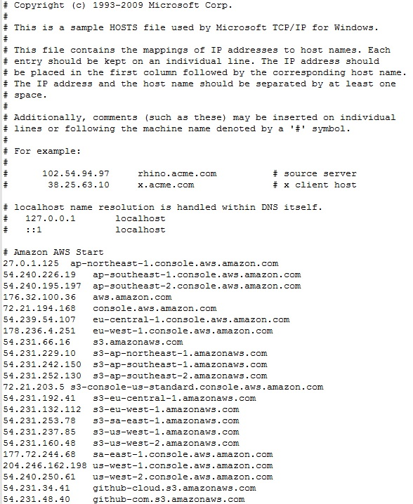ipconfig /displaydnsipconfig /flushdnsDNS nameservers cache
DNS nameservers Time to Live (TTL)
TTL is the amount of time that any nanmeserver is allowed to cache the data.
Back To Menu
DNS Resource Records
SOA Record
Start Of Authority Record. SOA Record indicates that this nameserver is the best source of information for the data within this zone.
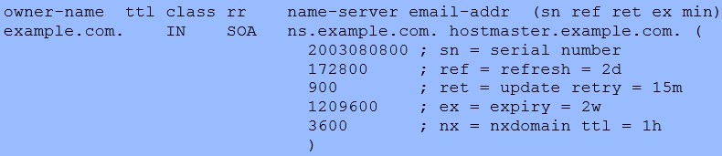NS Record
Nameserver Record. It indicates the authoritative records for the zone's name servers. NS RRs at a point of delegation are never authoritative, only NS RRs within the zone are regarded as authoritative.
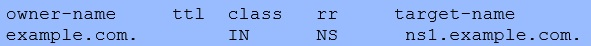Comparing SOA Record and NS record
Both of them look similar. Ideally, there is only one SOA record in a zone. An NS record declares that a given zone is served by a given nameserver, and it could have mutiple nameservers thus mutiple NS records.
A Record (IPV4) / AAAA Record (IPV6)
A stands for address. A domain can have mutiple A records. It maps the name to IP address.
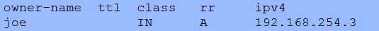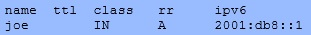
CNAME Record
Canonical(权威的) name. When a nameserver looks up a name and finds a CNAME record, it replaces the name with the canonical name and looks up the new name.
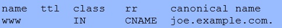DNAME Record
Redirection name. DNAME causes all labels BELOW its owner-name - or expressed another way, anything with labels to the left of the owner-name - to be re-directed to another name.
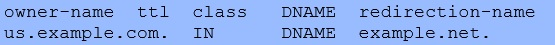MX Record
Mail Exchange Record. Specifies the name and relative preference of mail servers (mail exchangers in the DNS jargon) for the zone. The MX RR is used by external SMTP (Mail) Agents to route incoming mail for the domain.
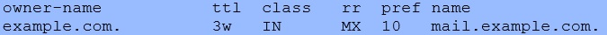PTR Record
Pointer records are the opposite of A and AAAA RRs and are used in Reverse Map zone files to map an IP address (IPv4 or IPv6) to a host name.
Back To Menu
The named.conf tells the nameserver whether it is a primary nameserver or a slave. NS records cannot tell us about it.
What's the difference between a primary nameserver and a slave nameserver?
The crucial difference is where the server gets its data. A primary nameserver reads its data from zone datafiles. A slave nameserver loads its data over the network from another nameserver which called zone transfer.
A slave nameserver is not limited to load zones from a primary nameserver, it can also load from another slave nameserver and cache the data.
The advantage is you only have to maintain the primary nameserver datafiles for your zone.
Back To Menu
Commands & Tools
• ping
• nslookup
• dig
dig @server name type, i.e. dig www.oolec.com ; dig www.oolec.com mx ; dig @202.106.0.20 www.oolec.com a ; dig www.oolec.com a +tcp
• https://intodns.com
• http://toolbar.netcraft.com/site_report?url=www.spdrs.com
Back To Menu
www.spdrsmobile.com is hosted on vendor's DNS nameservers, to make it redirect to www.spdrs.com on DNS level, we created a NS record for this zone and delegated this zone by StateStreet DNS nameservers. After that we also created a CNAME for the spdrsmobile.com and the CNAME record is pointing to www.spdrs.com.
spdrsmobile.spdrs.com is a subdomain of spdrs.com and being delegated by vendor's DNS nameservers. Because its parent domain *.spdrs.com is owned by StateStreet DNS servers, we just created CNAME record to point it to www.spdrs.com.
Back To Menu
1. New DNS request for www.spdrmobile.com and www.spdrsmobile.com & A record for spdrmobile.spdrs.com and www.spdrmobile.spdrs.com.
2. Hibernate connection issue - Kong to resennd the email and attend the team meeting.
3. EMEA registration blank page issue.
4. ASG remote cannot resolve pc name again.
Back To Menu